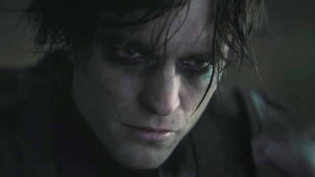
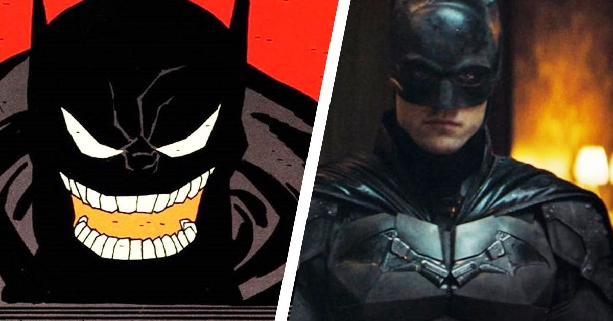
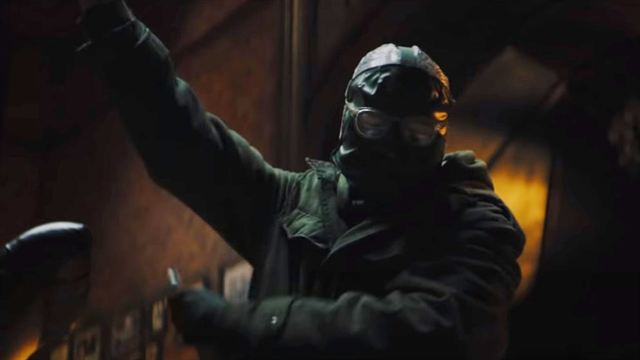
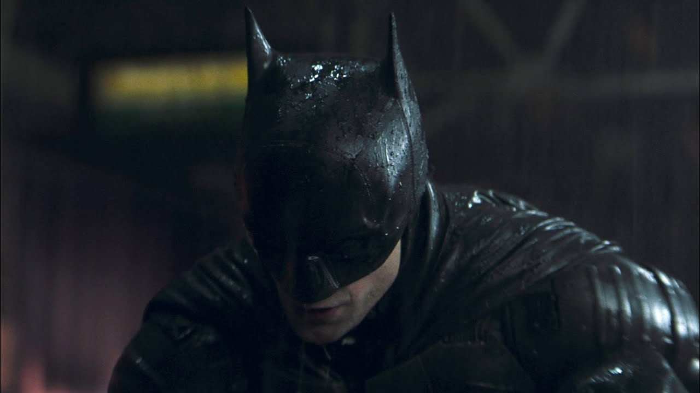

The Batman:La pelicula que lo puede cambiar todo.
Creo que la película de superhéroes mas esperada del momento es ni mas ni menos que The Batman, cinta protagonizada por Robert Pattinson y dirigida por Matt Reeves (La trilogía del planeta de los simios), que contara los primeros años del vigilante de Gotham en su lucha contra el crimen…..mostrándonos tanto un Batman como un Bruce Wayne, más dañado, más violento y más sensible….además de mostrar mas su faceta como el mejor detective del mundo, algo no visto en otras entregas….bueno si nada mas les dejo mi por que, The Batman puede cambiarlo todo.

Robert Pattinson es un buen actor
Ya han pasado mas de 8 años desde que la saga Twilight finalizo (que por alguna razón me gusta…tal vez sea por lo ridícula que llega a ser jaja), pero la gente sigue encasillando Pattinson es este papel, lo que le ha valido duras críticas desde que consiguió el papel del murciégalo. La verdad es que Pattinson es un gran actor y lo ha demostrado desde que acabo esta saga adolescente, películas como Remember me (2010), High life(2018),Good Time (la mejor actuación de su carrera a mi parecer) (2017), y The lighthouse (2019) y mas reciente Tenet(2020)., películas que no solo muestran su gran talento como actor si no también su evolución en su carrera, haciendo papeles arriesgados y controvertidos pero que a podido adaptar bien en las cintas….sin duda uno de los actores mas arriesgados de su generación y uno de los mejores de la década..
{kind=link}
Adaptación de cómics y psicología del personaje
Parte de lo Matt Reeves menciono en la entrevista que le hicieron en el panel de su película es sobre los cómics en los que se inspiro para escribir este guion, el cual es Batman: Ego, comic en el cual se explora mas la humanidad del vigilante de Gotham ante el peso de cargar con la responsabilidad defender a su ciudad y en la cual se puede ver la pelea interna entre Bruce Wayne y Batman, esto se debe gracias a la teoría del psicólogo Carl Gustav Jung que se llama , La sombra: que dice que hay un lado oscuro e inconsciente en todos nosotros que lucha por salir a flote, la sombra es una parte de nuestra personalidad la cual se forma de frustraciones, experiencias vergonzosas y miedos en el inconsciente; es mas peligrosa cuando la reprimimos. Aqui en este caso la sombra que persigue a Bruce Wayne es Batman, la cual aparece en la pantalla del baticomputador cuando Bruce Wayne decide dejar de ser el caballero de la noche…y lo motiva a seguir adelante.
{kind=link}
Su faceta detectivesca
Algo que jamás se ha visto (para mi) en las películas de Batman es su faceta como el mejor detective del mundo…. Y esto se podrá ver cuando se enfrente al Acertijo (interpretado por Paul Dano) en la que se tendrá que descubrir la conexión entre Bruce Wayne y el Acertijo, en la cual es más que seguro que sabe la identidad del Caballero de la noche y aunque se nos han dado pistas e indicios de la conexión entre estos personajes la cual podría tratarse de otro villano del murciélago Hush….ya que en el tráiler se puede apreciar al acertijo con una mascara parecida al del personaje antes mencionado y esto puede dar a entender la razón del que el acertijo ataque a Bruce Wayne…ya que podría tratarse de “Thommy” Elliot el amigo y “rival” de la infancia de Bruce Wayne la cual también podría estar relacionado con Thomas y Martha Wayne.
{kind=link}
Un tono mas realista y violento
Matt Reeves dijo que buscan que esta versión de Batman sea más realista algo que se pudo ver en la trilogía de Nolan…pero que aquí se espera que sea mucho más, cosa que ya se ha presentado en su tráiler en la Dc Fandome en la cual se mostró un traje mas casero y mas sencillo sin los avanzados y populares gadgets que caracterizan su traje…pero que al parecer se modificara en a lo largo de la película, el traje me gusta la verdad en todo pero creo que en lo que falla todavía en es la nariz de este…. Y también espero que llegue a cargar con los ojos blancos como en los cómics…al igual como se ve en el sencillo batimóvil, motocicleta y una baticueva un poco minimalista. Sobre el tono violento que muestra la cinta es muy bueno y parece que tiene ciertas inspiraciones sobre Taxi Driver (1976), Chinatown (1974) Y The French Connection (1971) incluso con Seven (1995) que puede dar el posible tema de la película que la describiría como un thriller oscuro y detective contra la basura de la sociedad y la corrupción que esperamos que de este tipo de estilo..
{kind=link}
Bueno luego de todo esto tengo que decir que espero mucho la cinta y también espero que sea una muy buena adaptación del personaje aunque creo que me da mas curiosidad ver a Robert Pattinson como Batman que ver una nueva adaptación del personaje ...pero que me emociona mucho. Aqui a la derecha les dejo mas artículos relacionados con el mundo de Batman.